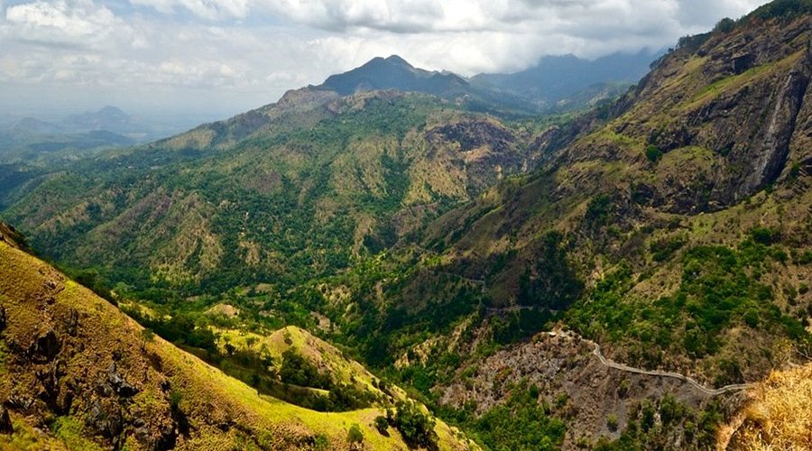

Key Attractions

The iconic Nine Arch Bridge, a railway marvel surrounded by lush greenery, offers stunning views and a popular photography spot.

Little Adam’s Peak is a short hike with panoramic views of Ella’s valleys, waterfalls, and tea plantations.

Rawana Falls, a spectacular waterfall, is perfect for nature lovers, photography, and enjoying the scenic beauty of the hill country.

The famous train ride from Kandy to Ella passes through tea estates, mountains, and waterfalls, considered one of the most scenic train journeys in the world.

Ella Rock trek offers breathtaking views of valleys, tea plantations, and villages, making it a rewarding adventure for hikers.